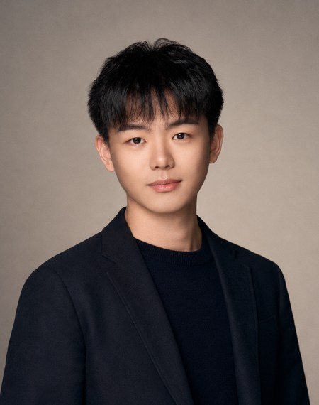

Undergraduate Teaching Assistant, CSC 280: Computer Models and Limitations — Department of Computer Science, University of Rochester, Fall 2025

My research focuses on AI agents that act in interactive environments. I build multimodal benchmarks and training environments for computer-use agents with executable, browser-verified rewards; train unified vision-language agents with SFT and reinforcement learning (GRPO); design reward models for long-horizon agent evaluation; and study memory and context management in multi-turn LLM agents. I am broadly interested in AI agents, multimodal learning, and reinforcement learning.
Undergraduate Teaching Assistant, CSC 280: Computer Models and Limitations — Department of Computer Science, University of Rochester, Fall 2025